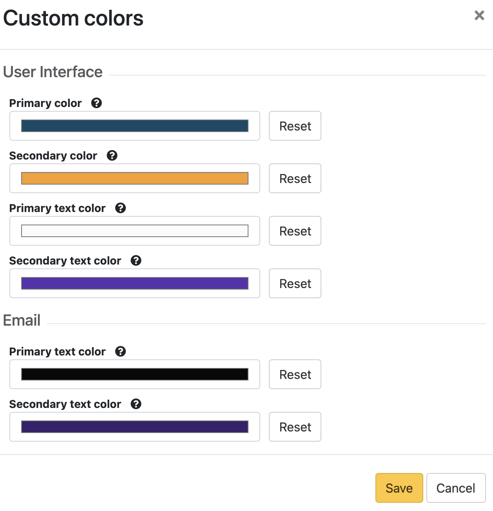
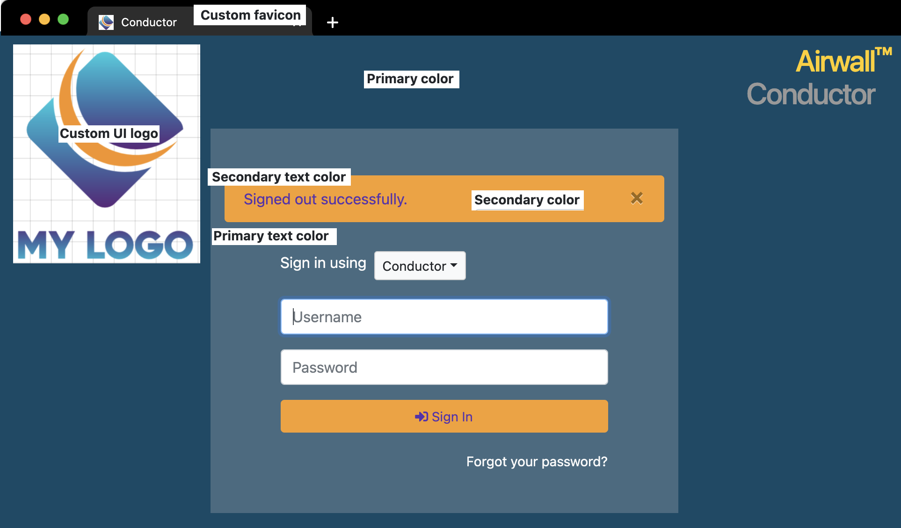
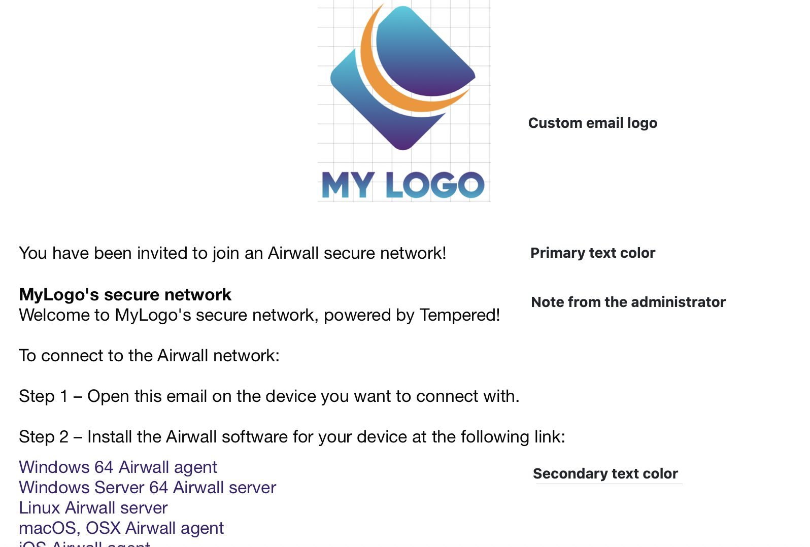
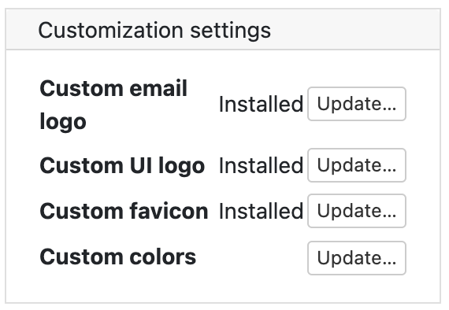

Customize the Conductor
You can customize the Conductor login screen and emails sent from the Conductor for your business.
Here's what you can customize:
- Conductor login screen – Add your company logo, and change the background colors and favicon.
- Conductor emails – Add your company logo and change the text color. You can also customize the subject line and add a note from the administrator when sending Airwall Invitations.
Keep reading for more details and examples.
Customize the Conductor Login page
-
Go to .

- Under Custom UI logo, select Upload, select Choose File, and choose the logo you'd like to appear on the login page, then select Upload.
- Under Custom favicon, select Upload, select Choose File, and choose the favicon you'd like to appear on your web browser tab, and then select Upload.
-
Under Custom colors, select
Update, and under User Interface, select the colors
you'd like to use on the Conductor
login page, and then select Save.

- Refresh your browser window to see the favicon change. Log out to see your login page changes.
Example
Here is an example of what the Conductor login page looks like with a custom logo, favicon, and colors, showing how your selections will map to the page:

Customize Conductor emails
Customize the emails sent by the Conductor to reflect your company's branding.
Before you Begin
- Set up your email settings in the Conductor. To do this, see Configure Email Settings.
- Make sure the size of the logo and icon files you want to use are 10MB or less.
Customize emails
-
Go to .
Note: If you cannot see all of these options, make sure you've set up your email settings in the Conductor. See Configure Email Settings. -
Next to Custom email logo, select
Upload, select Choose
File, and choose the logo you'd like to appear in emails from
the Conductor, and then select Upload.
Tip: Allowed image types are .png, .jpg, .jpeg, and recommended sizes are, in pixels: 200x60, 400x120, 800x240, 1600x480.
-
Next to Custom colors, select
Update, and under Email,
select the primary and secondary text colors you'd like to use in emails
from the Conductor, and then select Save.
- When you create Airwall Invitations, you can also customize the subject of the email and add a note from the administrator to the top of the email. For more information, see Connect People’s Devices with Airwall Invitations.
Example
Here is an example of what emails from the Conductor look like with a custom logo and custom text colors, showing how your selections will map to the emails:

Remove Conductor customizations
-
Go to .

- To reset logos and favicons – Next to Custom email logo,Custom UI logo, and Custom favicon, select Update, and then select Remove.
- To reset colors – Next to Custom colors, select Update, and then select Reset for any color you'd like to remove.
- Refresh the browser window to see your changes.